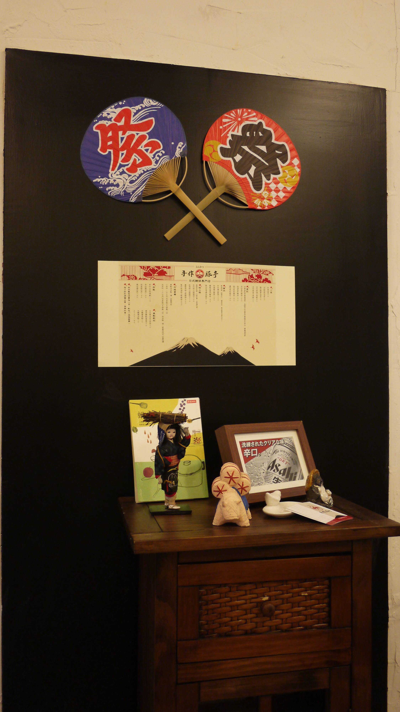

手作豚亭
- 本校營業地點位置 台北市大安區基隆路三段85號
- 餐飲業者名稱 手作豚亭
- 公司名稱 品悅企業社
- 營業時間及休息日
- 12:00-15:00
- 17:30-21:00
- 每周一公休
- 聯絡電話 02-27335336
- 營業項目、型態 日式豬排定食、丼飯
- 業者簡介
- 特上豚-嚴選黑毛豚豬肉，口感扎實肉質彈性高
- 豚肉-使用當日現宰優良體溫豚肉，肉食軟嫩多汁
- 味噌-湯底使用豚大骨和野菜糖心熬煮而成鮮甜甘口
- 高麗菜-使用特選梨山品種新鮮有自然甜味口感清脆
- 米-使用特級壽司米口感Q軟有彈性、顆粒品瑩圓潤
餐廳業者參考照片


- 